Explore Los Angeles, CA
A Brief History
Los Angeles expanded from a Spanish pueblo at the Porciúncula River into a global metropolis after Southern Pacific and Santa Fe railways arrived in the 1870s. Mission San Gabriel influence, Hollywood studio lots, and Pacific port infrastructure document how Mexican rancho land grants, citrus irrigation, and twentieth-century film and aerospace industries reshaped a semi-arid basin.
Attractions Map
Top Sights & Activities
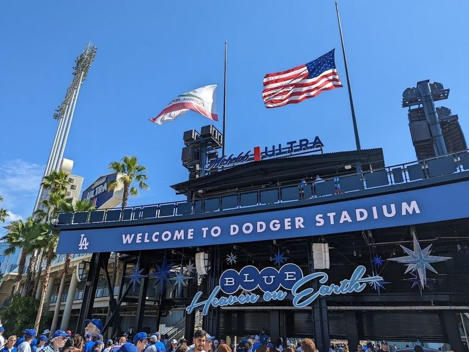
Dodger Stadium
Dodger Stadium anchors a familiar sightseeing stop in Los Angeles, CA. Visitors encounter it along the city’s central routes through United States, often combining the visit with nearby parks, museums, and historic streets on the same itinerary. Street-level access and clear signage make it easy to reach on foot or by public transit from downtown districts.
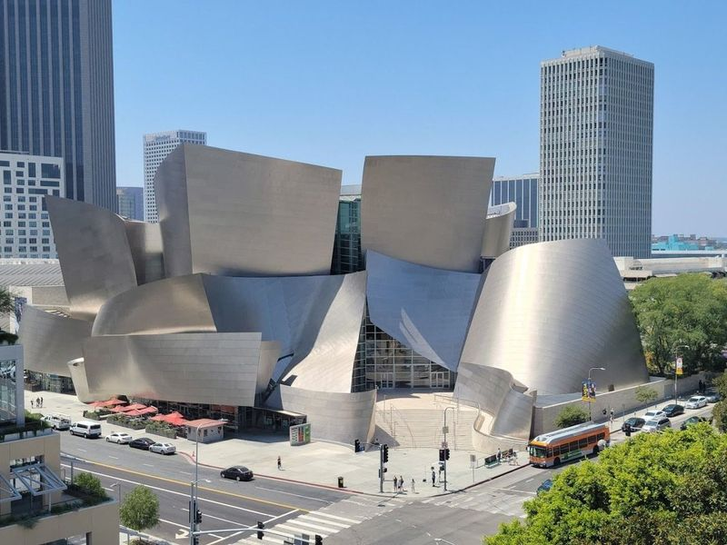
Walt Disney Concert Hall
Located in downtown Los Angeles, the Walt Disney Concert Hall is a striking music venue designed by renowned architect Frank Gehry. Built between 1999 and 2003, this avant-garde building boasts unstable geometry and disjointed forms, making it photographed buildings in the city. The stainless steel architecture creates a visually sight that stands out among other modern structures nearby.
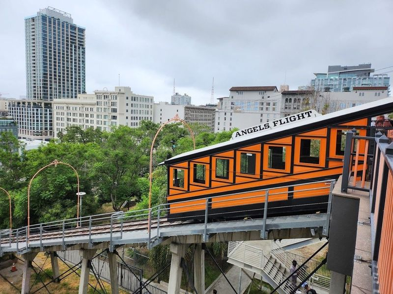
Angels Flight Railway
Angels Flight Railway, the world's shortest railway, was built in 1901 and features two funicular cars that travel on a 298-foot incline. Located at California Plaza's Bunker Hill, it offers a picturesque view of downtown Los Angeles from near the top. The location gained popularity after being featured in the film '500 Days of Summer.'.
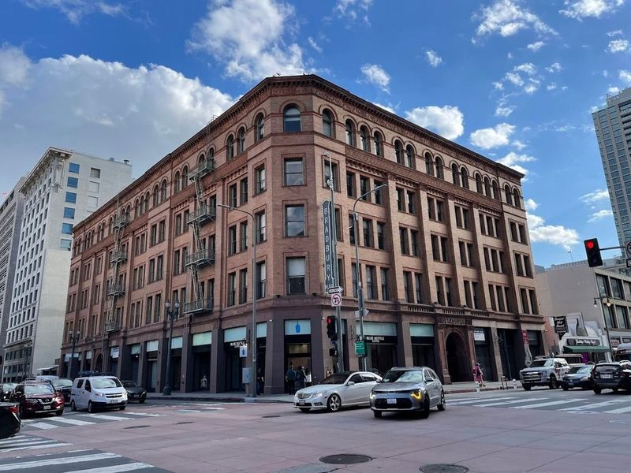
Bradbury Building
The Bradbury Building, constructed in 1893 by architect George Wyman, is a National Historic Landmark and the oldest commercial building in Los Angeles. Its Victorian center court boasts ornate Mexican tile floors, Belgian marble, Art Nouveau grillwork, oak paneling, and wrought-iron railings. The five-story office building has been featured in popular films like '500 Days of Summer' and 'Blade Runner,' showcasing its interior with a grand skylight overhead.
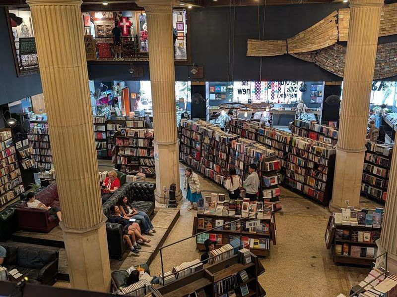
The Last Bookstore
The Last Bookstore, located in Downtown Los Angeles, is a spacious and airy book and record store that has become a beloved destination since its establishment in 2005. It features imaginative art installations with books suspended in the air and a tunnel made of hardbacks. With over 250,000 books and vinyl records spread across two floors, including some priced as low as $1, the store encourages book selling and trading to support the traditional print industry.
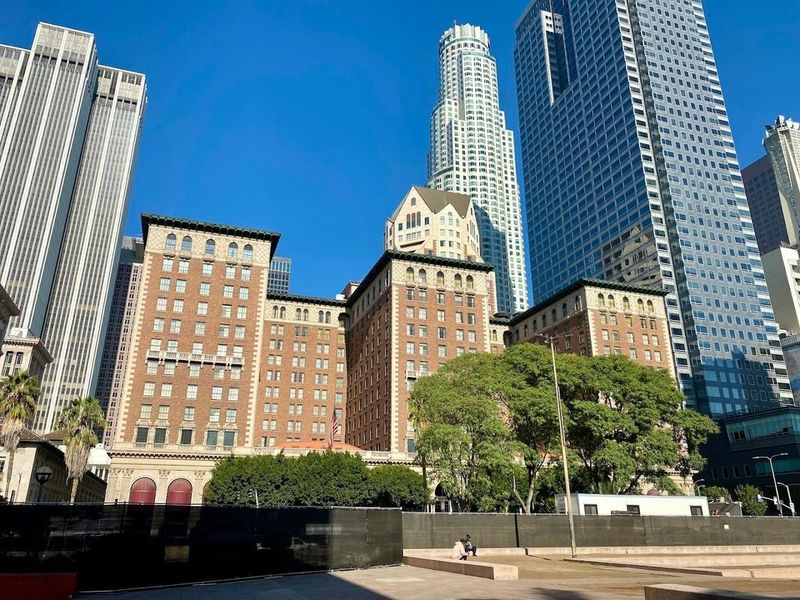
Pershing Square
Nestled in the heart of Los Angeles, Pershing Square is a modern park that has become a hub for community gatherings and entertainment. With its striking 10-story purple bell tower, this historic site offers an array of summer concerts and events that draw locals and visitors alike. Originally part of the pueblo lands granted to the city in 1781, it has evolved from a military reception area to a lively outdoor concert venue named after World War General John Pershing.
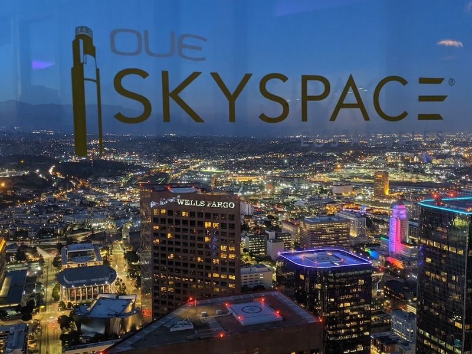
OUE Skyspace LA
OUE Skyspace LA is an open-air observation deck located on the rooftop of the city's tallest building, providing 360-degree views of Los Angeles, including its hills, ocean, and distant mountains. Visitors can start their experience with interactive displays on the 54th floor before taking a second set of elevators to access the indoor and outdoor decks spanning levels 69 and 70.
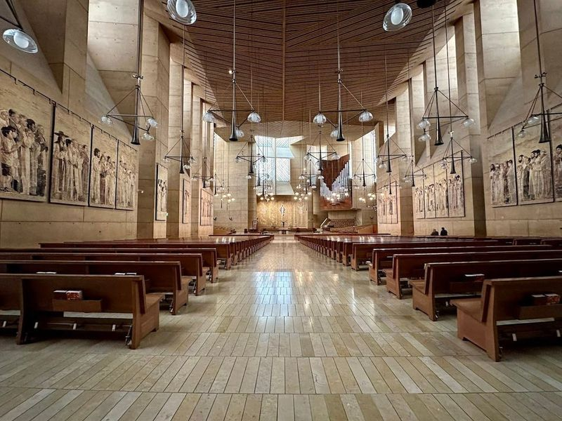
Cathedral of Our Lady of the Angels
The Cathedral of Our Lady of the Angels stands as a modern marvel in Los Angeles, completed in 2002 and designed by renowned architect Jose Rafael Moneo. This impressive structure is not only the third-largest cathedral globally but also boasts a interior adorned with translucent alabaster windows and magnificent tapestries that evoke tranquility.
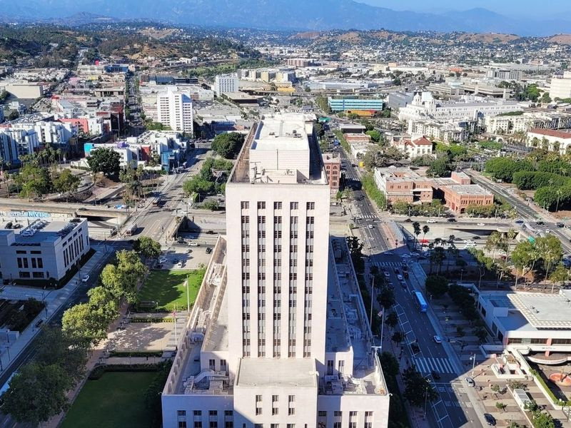
Los Angeles City Hall
Los Angeles City Hall, a historic landmark built in 1928 by renowned architects John Parkinson, Albert C. Martin, and John C. Austin, offers docent-led tours and an impressive 27th-floor observation deck. Despite being overshadowed by modern skyscrapers, the grand white concrete tower stands as an symbol of the city's history and architecture. The building's beauty is evident both inside and out, with a stately courtyard and tiled rotunda on the third floor.
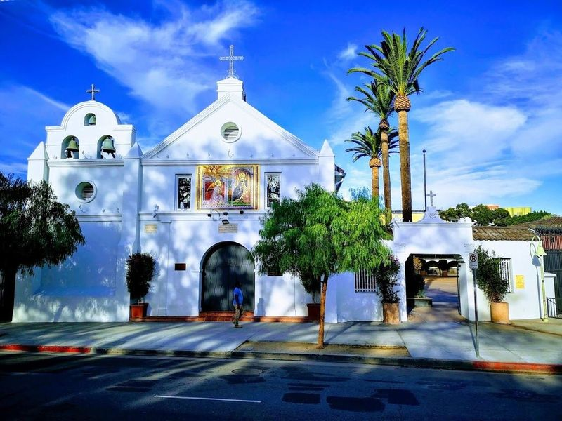
El Pueblo de Los Ángeles Historical Monument
El Pueblo de Los Angeles Historical Monument is a testament to the city's rich heritage, marking the very spot where Los Angeles was founded in the late 18th century. This living museum invites visitors to explore its many attractions year-round, many of which are free. Stroll through Olvera Street, a bustling marketplace filled with colorful vendors and tantalizing food options like churros.
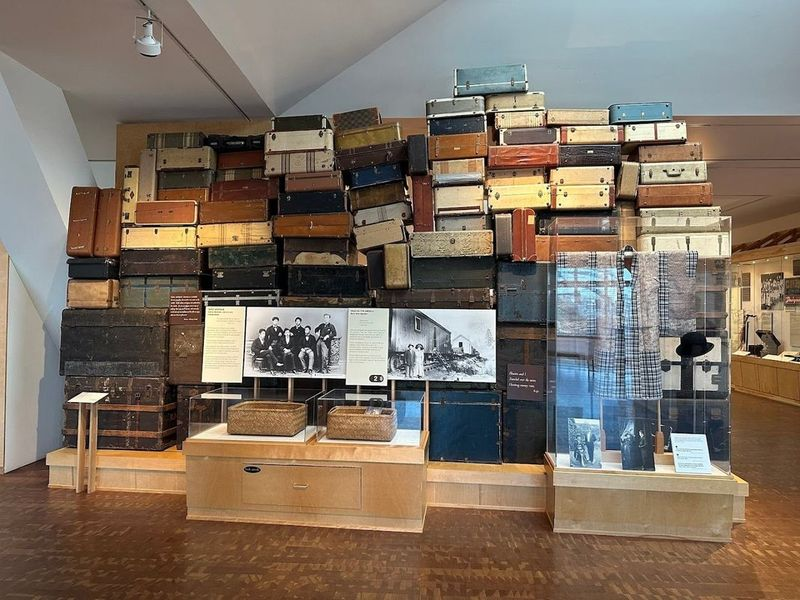
Japanese American National Museum
Nestled in the Little Tokyo district, the Japanese American National Museum stands as a beacon of cultural heritage, dedicated to showcasing over 130 years of Japanese-American history. This remarkable institution aims to highlight the significance of ethnic diversity through its extensive collection of art, artifacts, and historical exhibits.
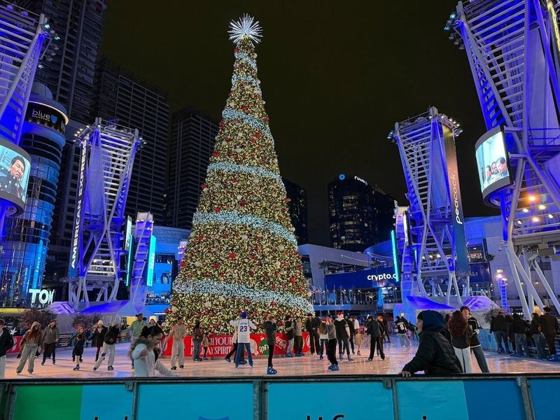
L.A. Live
L.A. Live is a sprawling entertainment complex in downtown Los Angeles, featuring a theater, The Grammy Museum, hotels, and restaurants. It hosts the All-Star Chef Classic with renowned chefs offering seated dinners and strolling events. Additionally, it's conveniently located near the LA Metro for easy access to various attractions like hiking trails at Runyon Canyon and the Hollywood Walk of Fame.
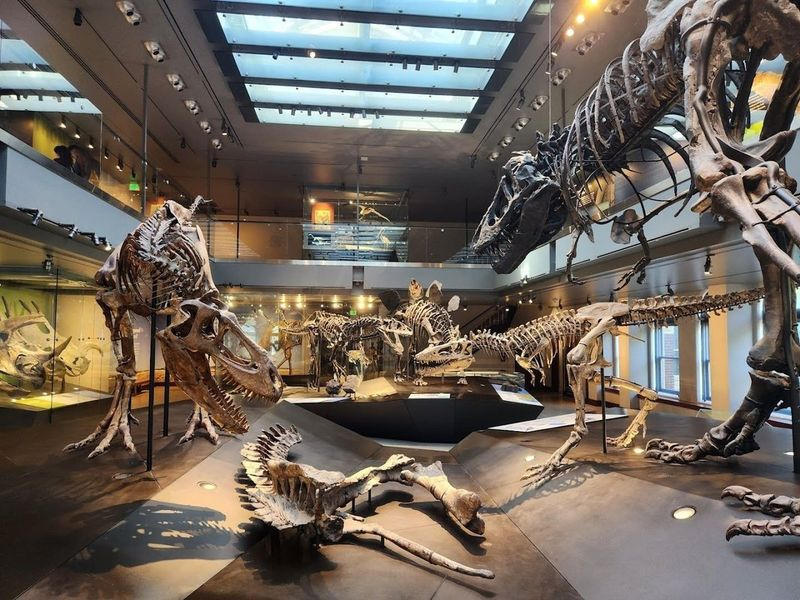
Exposition Park
Exposition Park is a sprawling 160-acre urban space in Los Angeles, featuring arenas, museums, and lush green areas with trees and gardens. Situated in South Los Angeles, the park has become a focal point for diverse neighborhoods and has witnessed significant gentrification in recent years. One of its main attractions is the Natural History Museum of Los Angeles County (LACM), located next to the California Science Center.
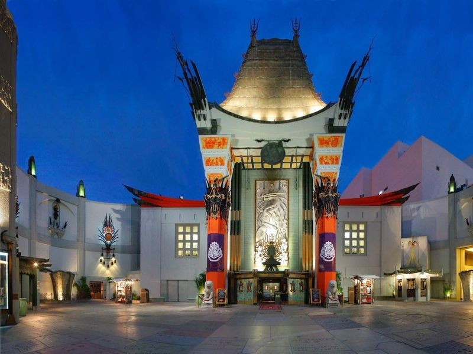
TCL Chinese Theatre
In Hollywood Boulevard, TCL Chinese Theatre is an and opulent movie palace that holds a significant place in LA's film and entertainment history. It features the world's largest IMAX auditorium with a state-of-the-art laser light projector, making it a popular venue for film premieres. The theater also offers tours where visitors can explore the hand- and footprints of numerous Hollywood stars immortalized outside.
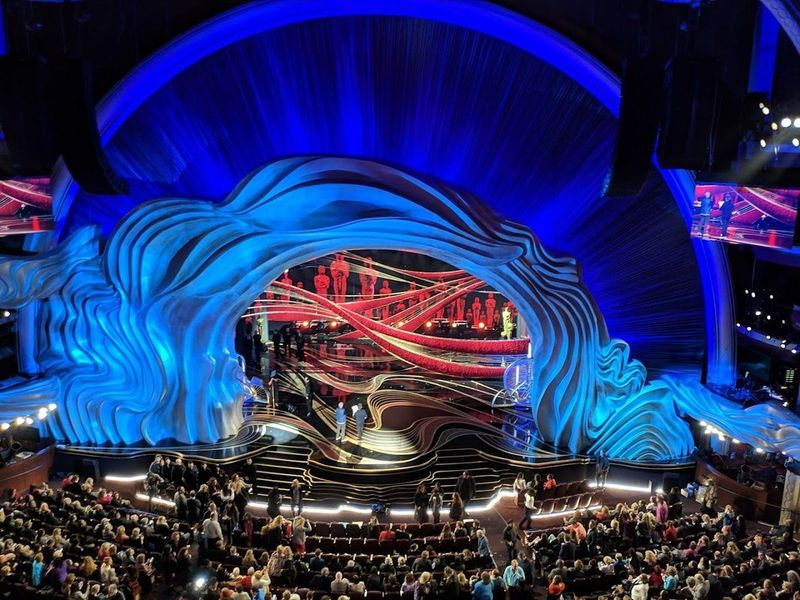
Dolby Theatre
The Dolby Theatre, known for hosting the prestigious Academy Awards, is a modern venue that also accommodates film premieres, shows, and public tours. It has been the home of the Oscars since 2001. Visitors can take a 30-minute walking tour to explore different areas of the theater, including the Dolby Lounge where celebrities relax during shows and where regular guests can take photos with a real Oscar.
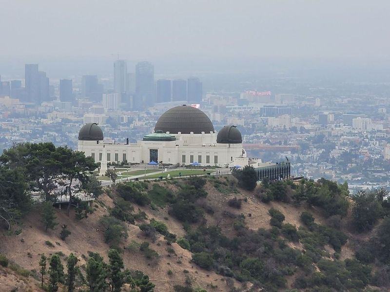
Hollywood Sign
The Hollywood Sign, a legendary symbol of the entertainment industry, was erected in 1923 and is situated on Mount Lee. This landmark is a for anyone visiting California, especially those aspiring to make their mark in showbiz. For an experience, explore various driving tours and walking trails that offer views of the sign.
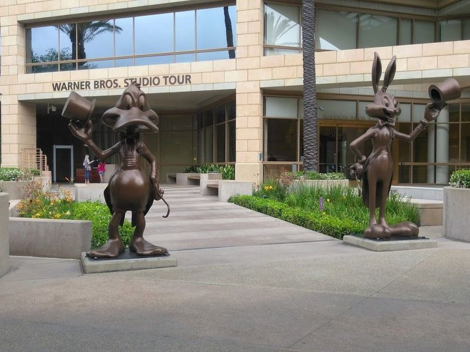
Warner Bros. Studio Tour Hollywood
Warner Bros. Studio Tour Hollywood offers a unique behind-the-scenes look at a working movie studio, providing valuable insights into the intricate processes and technologies involved in creating films and TV shows. Located in Burbank, this tour showcases the meticulous attention to detail put into production, offering an awe-inspiring experience for visitors.
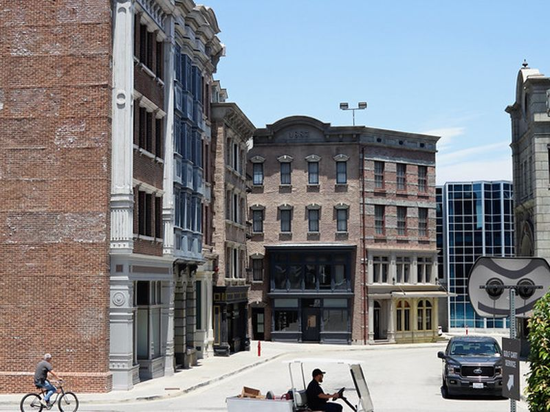
Universal Studio Tour
Universal Studio Tour anchors a familiar sightseeing stop in Los Angeles, CA. Visitors encounter it along the city’s central routes through United States, often combining the visit with nearby parks, museums, and historic streets on the same itinerary. Street-level access and clear signage make it easy to reach on foot or by public transit from downtown districts.
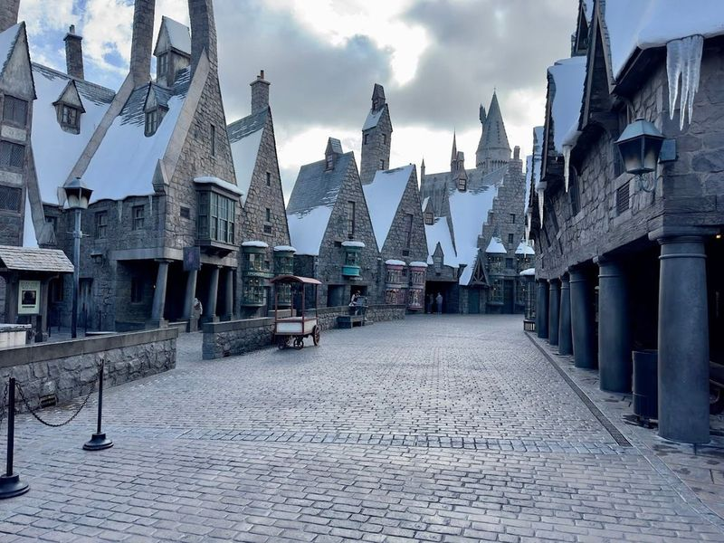
The Wizarding World of Harry Potter
Step into the enchanting world of "The Wizarding World of Harry Potter," a theme park attraction that brings the beloved Harry Potter series to life. From thrilling 4D shows and roller coasters to exploring Hogsmeade village, Ollivanders wand shop, and indulging in treats from Honeydukes, this place is a dream come true for fans of all ages. The attention to detail is remarkable, making visitors feel like they've stepped into the movies.
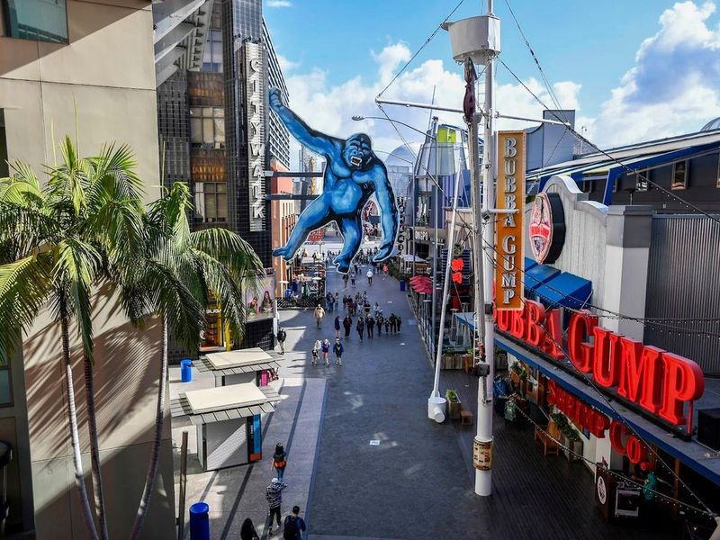
Universal Studios Hollywood
Universal Studios Hollywood is a sprawling amusement park in Los Angeles, known as The Entertainment Capital of L.A. It offers a unique cinema-themed experience with rides, restaurants, shops, and shows. Visitors can explore movie sets and enjoy attractions like Despicable Me Minion Mayhem, King Kong 360 3-D Studio Tour, Transformers: The Ride-3D, The Simpsons Ride, Revenge of the Mummy, and Jurassic Park - The Ride.
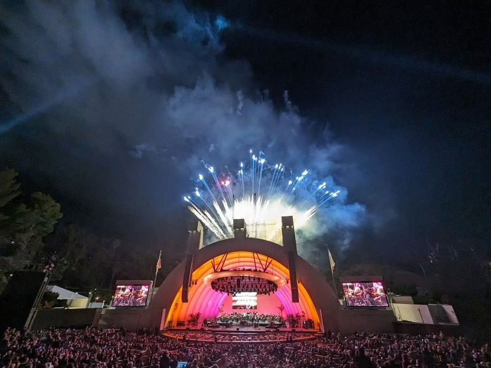
Hollywood Bowl
Nestled in the enchanting Hollywood Hills, the Hollywood Bowl is a historic amphitheater that has been captivating audiences since 1922. With its natural acoustics and picturesque surroundings, this venue can accommodate up to 18,000 guests who flock here each summer for an array of performances spanning every musical genre.
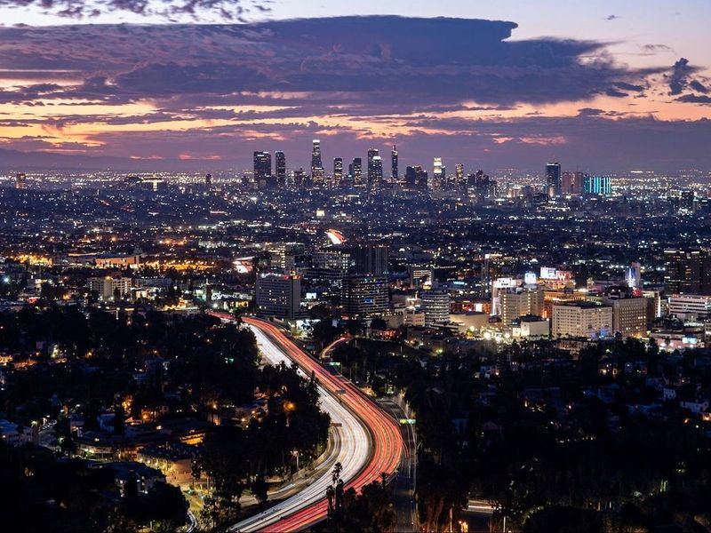
Jerome C. Daniel Overlook above the Hollywood Bowl
Perched high above the Hollywood Bowl amphitheater, the Jerome C. Daniel Overlook offers a panoramic view of Los Angeles. Located along the Mulholland Drive, this spot provides telescopes for visitors to take in the sights of downtown LA, the famous Hollywood Sign, and even glimpses of the ocean on clear days.
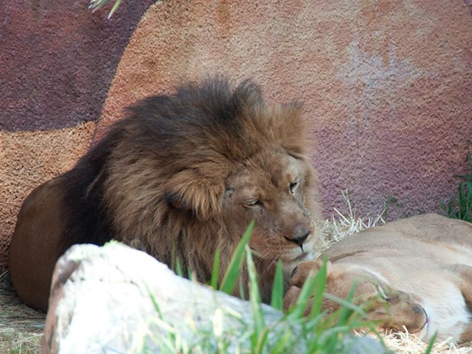
Los Angeles Zoo
Los Angeles Zoo anchors a familiar sightseeing stop in Los Angeles, CA. Visitors encounter it along the city’s central routes through United States, often combining the visit with nearby parks, museums, and historic streets on the same itinerary. Street-level access and clear signage make it easy to reach on foot or by public transit from downtown districts.
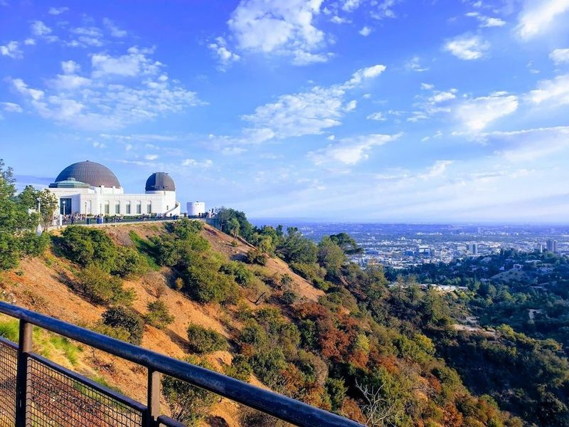
Griffith Park
Griffith Park is a sprawling urban oasis that offers a variety of activities for visitors. It features hiking and equestrian trails, providing opportunities to explore the natural beauty of Southern California while enjoying city views. The park also houses popular attractions such as the Greek Theatre and the L.A. Zoo, making it an ideal destination for families.
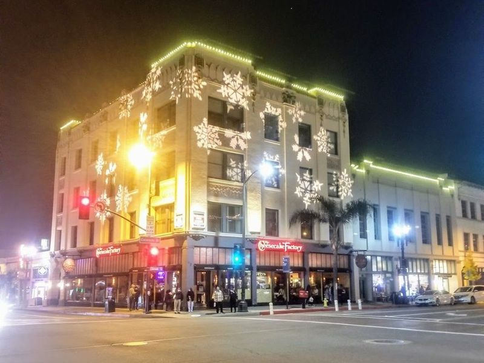
Old Pasadena
Old Pasadena is a downtown historic district that has become a popular destination for shopping, dining, and entertainment. Visitors can start their day at the Botanical Gardens before exploring the 19th-century brick buildings filled with shops and restaurants in Old Town Pasadena. Art and architecture enthusiasts should not miss the Norton Simon Museum, known for its impressive collection of works by artists such as Degas, Rembrandt, Goya, and Picasso.
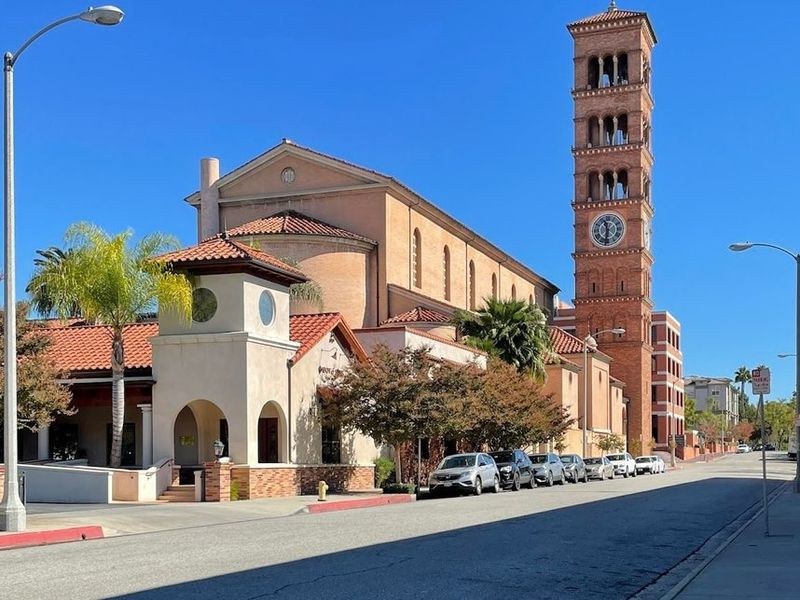
St. Andrew Catholic Church
St. Andrew Catholic Church, located in Pasadena, is a significant landmark with its Romanesque Revival campanile bell tower and regular masses. It is the oldest Catholic parish in the city and features an interior that replicates the Basilica of Saint Sabina in Rome, complete with murals, decorations, and a white Carrara marble altar canopy. The church's campanile bell tower is one of Pasadena's most recognizable features and can be seen from miles around.
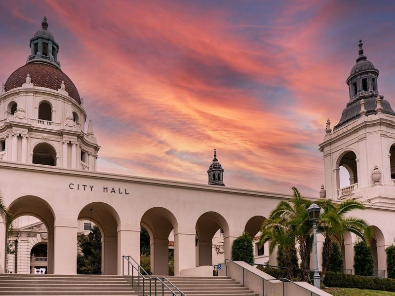
Pasadena City Hall
Pasadena City Hall, a architectural masterpiece completed in 1927, showcases the Renaissance-style design and serves as the administrative hub of the city. This structure is a testament to the City Beautiful movement, reflecting grandeur and beautification in urban planning. Designed by Bakewell and Brown, it seamlessly blends Mediterranean Revival and Spanish Colonial Revival styles. The prominent circular tower at the entrance sets an impressive tone for visitors.
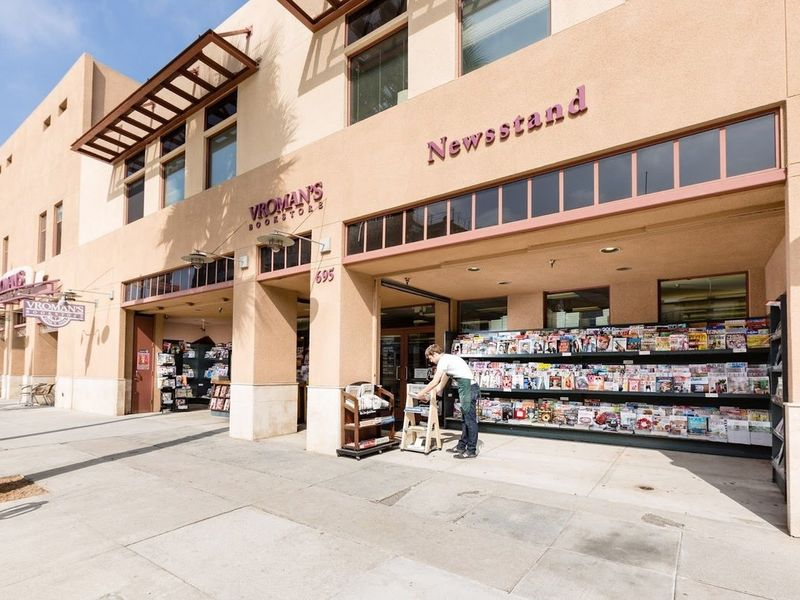
Vroman's Bookstore
Vroman's Bookstore, situated in the Playhouse District, is a historic and expansive bookstore that has been a pillar of literary culture since its establishment in 1894 by Adam Clark Vroman. This beloved institution has welcomed numerous notable figures over the years and remains rooted in its community-focused values. The store's founder, known for his passion for books and philanthropy, even sold his personal collection to fund the store's opening.
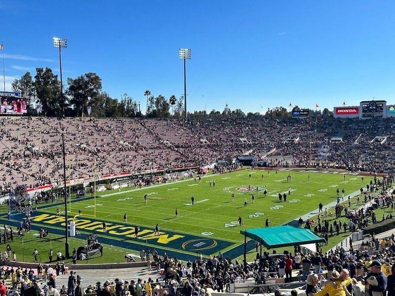
Rose Bowl Stadium
The Rose Bowl Stadium, a historic arena located in the Arroyo Seco, is renowned for hosting the annual college-football championship game and a popular monthly flea market. This stadium, built in 1922 and renovated in 2013, can accommodate over 90,000 people for various events such as football games, concerts, and Independence Day fireworks shows. It serves as the home field for the UCLA football team and has welcomed performances by music legends like U2 and Beyonce.
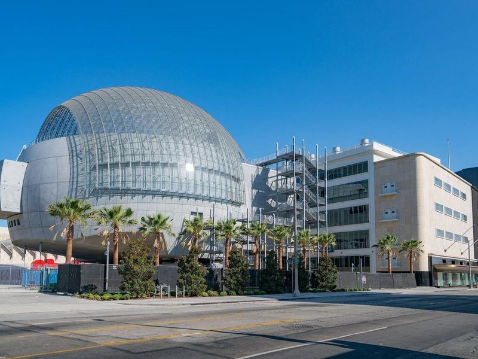
Academy Museum of Motion Pictures
The Academy Museum of Motion Pictures is a modern museum dedicated to the history of film in the United States and around the world. Visitors are greeted by a grand lobby before ascending to the second floor and crossing an elevated walkway into the Sphere Building, which houses a 966-seat theater with plush, cupholder-free seats and multiformat projection capabilities. As the largest museum in the U.S.
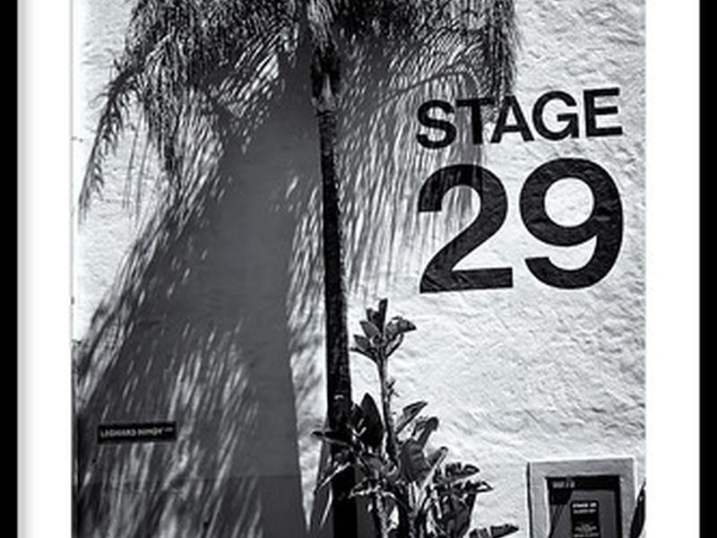
Paramount Pictures Studio Tour
Paramount Pictures Studio Tour anchors a familiar sightseeing stop in Los Angeles, CA. Visitors encounter it along the city’s central routes through United States, often combining the visit with nearby parks, museums, and historic streets on the same itinerary. Street-level access and clear signage make it easy to reach on foot or by public transit from downtown districts.